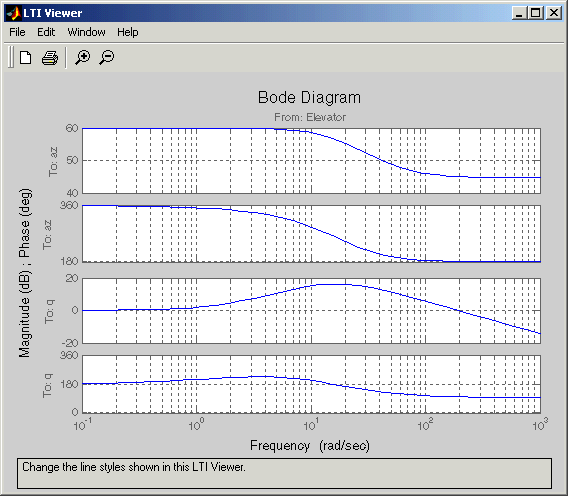

Trim and Linearize Missile Airframe
This demonstration shows how to trimi and linearize within Simulink to generate linear models of an airframe.
Designing the autopilot using classical design techniques requires linear models of the airframe pitch dynamics for a number of trimmed flight conditions. MATLAB can determine the trim conditions and derive linear state-space models directly from the nonlinear Simulink and Aerospace Blockset model. This saves time and helps to validate the model. The functions provided by the Control System Toolbox allows you to visualize the behavior of the airframe in terms of open-loop frequency (or time) responses.
Double-click on the yellow block at the bottom of the Simulink diagram to run an M-script that describes on these commands are used.
The output from this demo is a Bode diagram in the Control System Toolbox viewer.
